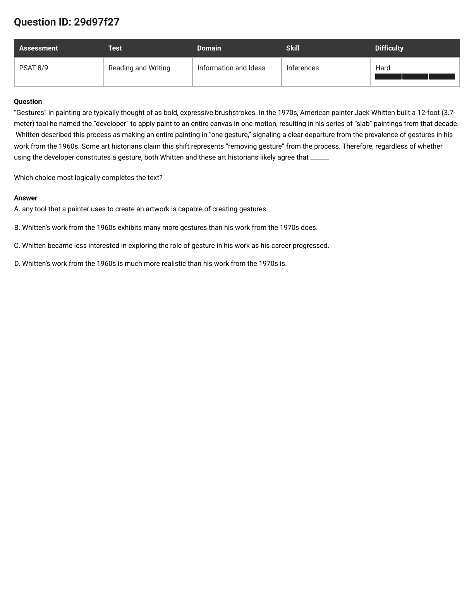
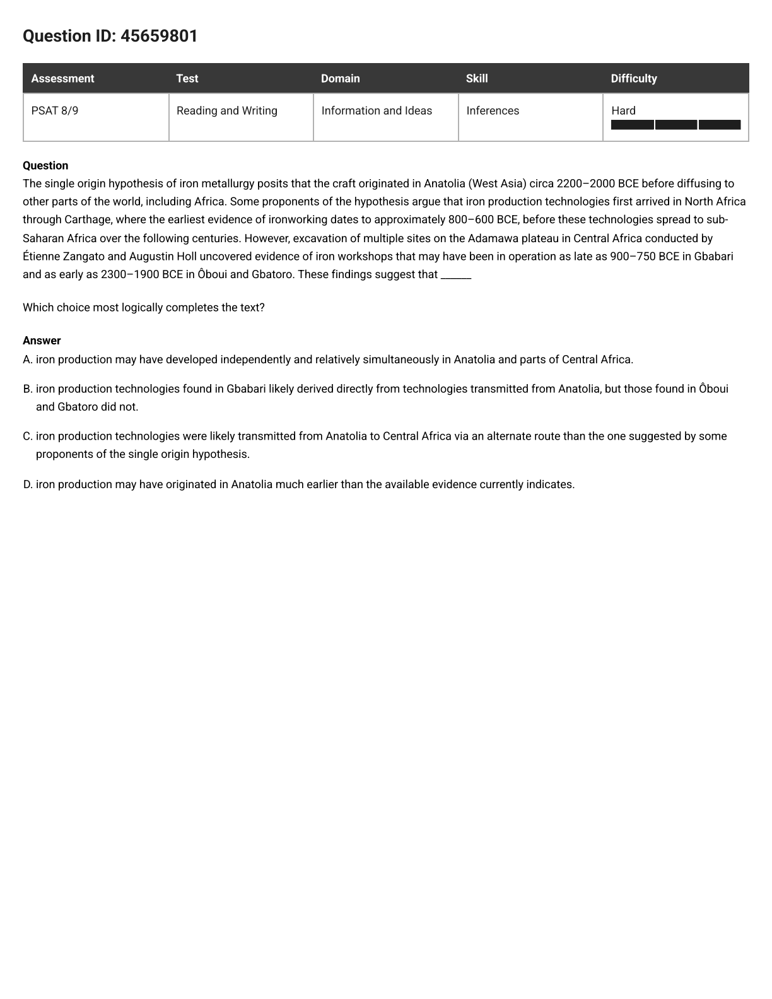
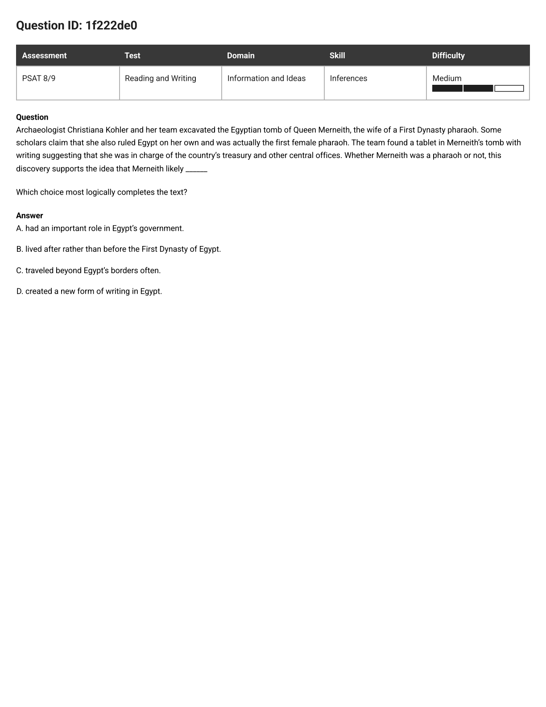
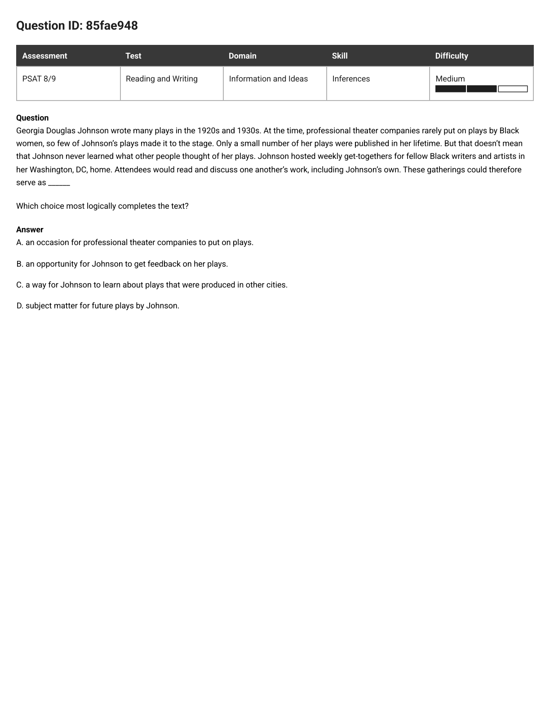
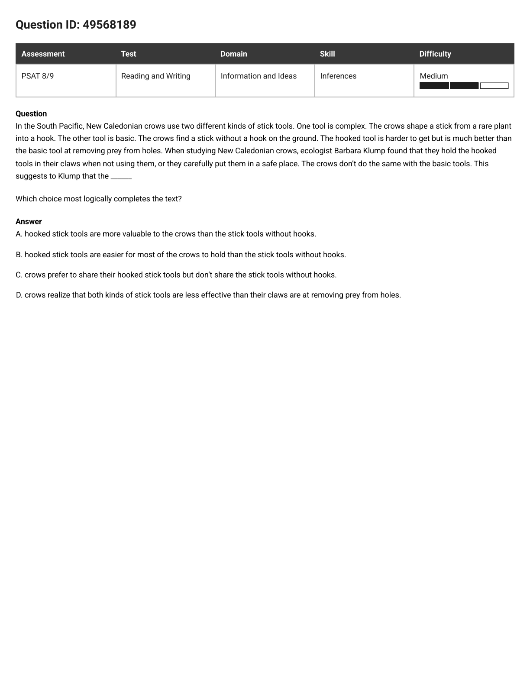
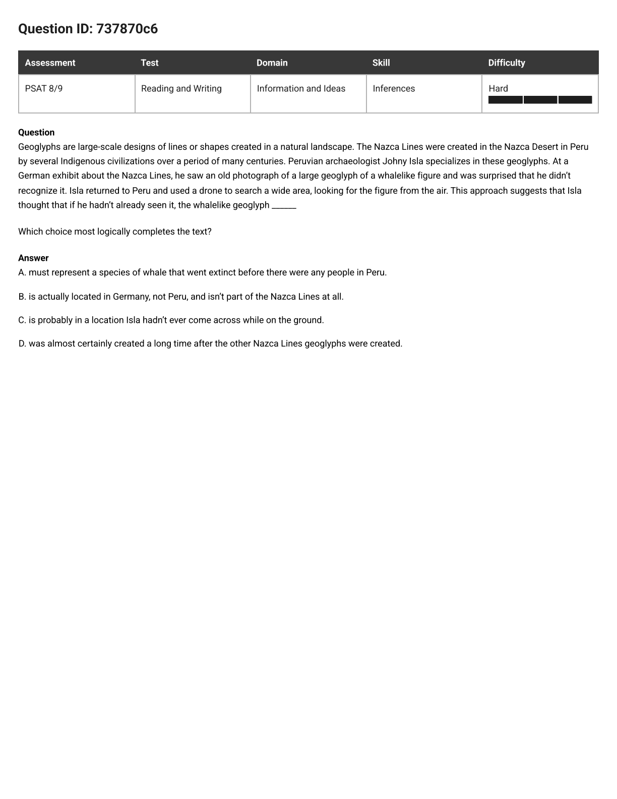
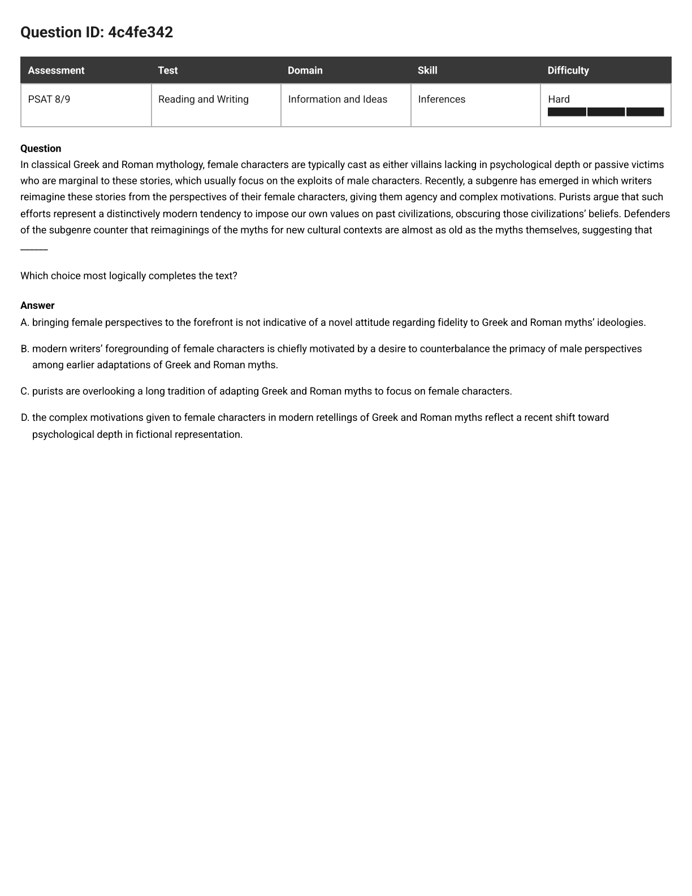
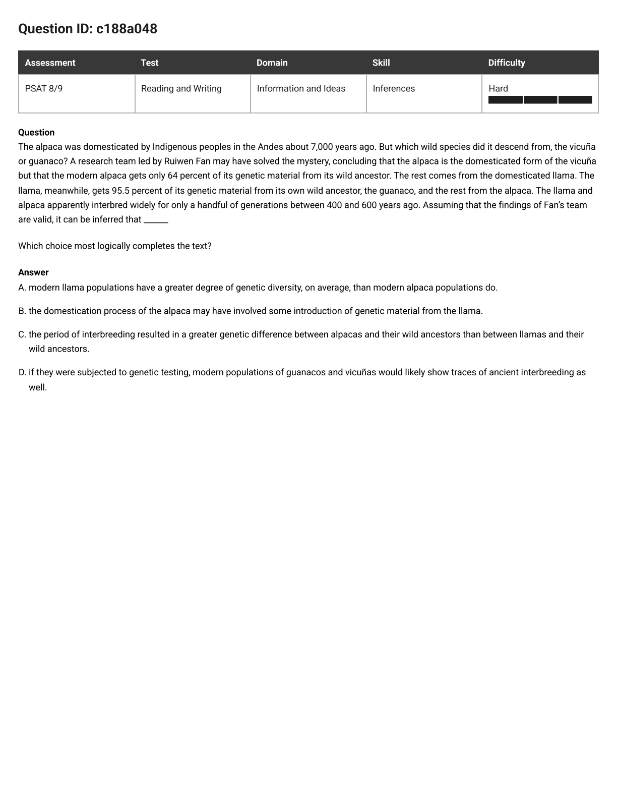

PSAT 8/9 · Inferences · 12 misses, one model
Every question here ends in a blank. The passage stacks up two or three facts, says therefore, and hands you the pen. The shared slip in all twelve: writing an interesting ending instead of the next one. On this page the correct answer is nearly always the most boring choice on the list — the smallest claim that still says something new.
Right before the blank there is always a hinge word: therefore, thus, this suggests, contends, it can be inferred, could serve as. It tells you two things. One: the blank is a conclusion, so it can only be built from what is already on the page. Two: it belongs to somebody — Ghisbain, Purcell, Klump, "the defenders," "both of them." Say the owner's name out loud.
The two or three sentences before the blank are your only building material. Say each one back as a short fact — that is your stack of bricks. Nothing else is allowed in: not what you know about bees, not what sounds grown-up, not what is probably true in real life.
Cover the four choices with your hand and finish the sentence in your own ten words. This is the step everyone skips, and skipping it is exactly why the exciting choice wins: with no sentence of your own in your head, the boldest one sounds like the smartest one.
Now uncover them and ask each choice two questions:
Keep the smallest claim that still adds a step. Then match the hedges: if the text says some, may, a possible explanation, the answer should sound just as careful. A choice more certain than the passage is a wrong choice.
Overstep. One step too far — the right idea cranked up too loud. Alarm words: any, all, never, must, chiefly, should not.
Echo. Repeats a fact the passage already gave you. Small and safe and still wrong: an inference has to add a step, not replay one.
Import. Smuggles in a fact the text never gave — a comparison nobody measured, a reason nobody offered. True in the world is not the same as given on the page.
Backspin. Right facts, wrong direction: cause and effect swapped, or a conclusion the evidence actually argues against.
Sidestep. A perfectly sensible sentence — finishing a different sentence than the hinge started. Right topic, wrong question.

The question as it appeared
"Gestures" in painting are typically thought of as bold, expressive brushstrokes. In the 1970s, American painter Jack Whitten built a 12-foot (3.7-meter) tool he named the "developer" to apply paint to an entire canvas in one motion, resulting in his series of "slab" paintings from that decade. Whitten described this process as making an entire painting in "one gesture," signaling a clear departure from the prevalence of gestures in his work from the 1960s. Some art historians claim this shift represents "removing gesture" from the process. Therefore, regardless of whether using the developer constitutes a gesture, both Whitten and these art historians likely agree that ______
Which choice most logically completes the text?
In plain words: two sides argue about one thing. The blank wants the part they'd both nod at.
The hinge says regardless of whether using the developer constitutes a gesture. That names the argument and then throws it out of the room. Whitten says the developer makes one gesture; the historians say it removes gesture. Whatever the blank is, it has to be true on both stories.
Lots, versus one-or-zero. The two sides disagree about whether the 1970s number is one or none — and it doesn't matter, because both are smaller than "lots."
Ten words, built only from bricks. Now uncover the choices.
"Whitten's work from the 1960s exhibits many more gestures than his work from the 1970s does." Nothing added, nothing exciting, and it survives both stories. That's the answer.
B — more gestures in the 1960s than in the 1970s.
Step 1 did the work: once you delete the argument itself, only one choice is left that both sides could sign.
T1, Overstep. "Any tool ... is capable of creating gestures" is a rule about every tool in the world. The historians deny it about even one tool — the developer. Ten-second kill: a choice both sides must agree on cannot be a claim one side is arguing against.
T3, Import. The passage gives you a change in method, never a change in interest — and a man who builds a 12-foot tool to make one giant gesture is not obviously bored of gesture. "As his career progressed" also stretches two decades into a whole life. No brick, no claim.
T3, Import. Realism appears nowhere on the card. Gesture is about how the paint got there, not about whether the picture looks like something. Scan the passage for the word; if it isn't there, the choice is dead.

The question as it appeared
The single origin hypothesis of iron metallurgy posits that the craft originated in Anatolia (West Asia) circa 2200–2000 BCE before diffusing to other parts of the world, including Africa. Some proponents of the hypothesis argue that iron production technologies first arrived in North Africa through Carthage, where the earliest evidence of ironworking dates to approximately 800–600 BCE, before these technologies spread to sub-Saharan Africa over the following centuries. However, excavation of multiple sites on the Adamawa plateau in Central Africa conducted by Étienne Zangato and Augustin Holl uncovered evidence of iron workshops that may have been in operation as late as 900–750 BCE in Gbabari and as early as 2300–1900 BCE in Ôboui and Gbatoro. These findings suggest that ______
Which choice most logically completes the text?
In plain words: a theory says iron started in one place and travelled. A dig just found iron that's too old to have travelled.
Not the hypothesis, not its proponents. The blank belongs to the new dig, and the dig arrives after a big fat However. A "however" tells you the conclusion pushes against what came before it.
| Place | Dates on the card |
|---|---|
| Anatolia — where the craft supposedly began | 2200–2000 BCE |
| Carthage, North Africa — earliest evidence | 800–600 BCE |
| Gbabari, Central Africa | 900–750 BCE |
| Ôboui and Gbatoro, Central Africa | 2300–1900 BCE |
Stare at the shaded row. Central Africa was making iron at 2300 BCE. Anatolia is credited with 2200 BCE. The place the iron was supposed to come from is not older than the place it supposedly went to.
Notice how careful your own sentence is. It doesn't say Africa was first. It says the two happened around the same time, so one need not have caused the other.
"May have developed independently and relatively simultaneously." The card says the workshops "may have been in operation" — same amount of caution. That match is a fingerprint: the College Board writes the answer with the passage's own hedges.
A — iron may have developed independently in both places at roughly the same time.
Step 2 did the work. One column of dates, and three choices die without any argument at all.
T3, Import. It invents a link — Gbabari's iron came "directly from Anatolia" — that no sentence on the card provides. And the dates refuse it anyway: Gbabari's workshops start at 900 BCE, a century before the earliest North African evidence at Carthage (800 BCE). Iron can't arrive down a road that isn't open yet.
T4, Backspin. This is the rescue attempt: keep the single-origin story alive by changing the route. But the findings argue against diffusion, not against a particular road. No route, however clever, delivers 2200 BCE Anatolian technology to a workshop already running in 2300 BCE.
T5, Sidestep. A fine sentence about the wrong continent. The dig was in Central Africa; a Central African date cannot push an Anatolian date back. It also quietly does the opposite of what "However" promised — it protects the hypothesis instead of straining it.
The question as it appeared
Like many other genera of wild bees, bumblebees have in recent decades experienced population collapse caused by, among other factors, habitat destruction and climate variation. Bumblebees are also one of the most researched bee genera, second only to honeybees. As a result, ecologists have gained much of their insight about wild-bee declines from bumblebees. In a 2021 paper, zoologist Guillaume Ghisbain notes that bumblebees are among the relatively few wild-bee genera that display social behaviors and dietary generalism (ability to obtain nectar and pollen from a diversity of plant species), two traits that are associated with increased resilience to some specific environmental changes. Ghisbain therefore contends that ______
Which choice most logically completes the text?
In plain words: scientists learn about all wild bees from one unusual bee. Ghisbain is worried about that.
The blank is Ghisbain's own claim, and the word contends means he's arguing for something. Arguing against what? Against the sentence just above: that ecologists get most of their wild-bee insight from bumblebees.
Underline "relatively few" and "some specific." Those two hedges are the size of the claim you're allowed to make.
Put them side by side and only the volume differs. B: researchers should not use bumblebees at all, even for similar bees. D: responses are not always comparable, so exercise caution. The passage hedged twice; D hedges twice; B hedges never.
D — responses aren't always comparable, so extrapolate with caution.
Step 4 did the work: when two choices carry the same idea, the passage's hedges pick the winner.
T3, Import. The card names habitat destruction and climate variation as two causes, "among other factors." It never ranks them. Any choice that says one is worse than the other is inventing a measurement.
T1, Overstep. Right idea, shouted. "Should not use" is a ban where the bricks support a caution — and the "even similar ones" clause contradicts the reason for the caution in the first place. Same thought as D, two sizes too big.
T1 + T5, Overstep into a Sidestep. The card says those traits help with some specific environmental changes; C upgrades that to "environmental stress" generally, then predicts the future. Worse, it turns a warning about research methods into cheerful news about bumblebees — a conclusion Ghisbain isn't reaching for.
Same four steps. For each: name the hinge and its owner, stack the bricks, cover the choices and say your own ten words, then size. Open the reveal only after you've committed — and check you can name the trap species on every wrong choice.
1f222de0 · Medium · Queen Merneith's tomb

Archaeologist Christiana Kohler and her team excavated the Egyptian tomb of Queen Merneith, the wife of a First Dynasty pharaoh. Some scholars claim that she also ruled Egypt on her own and was actually the first female pharaoh. The team found a tablet in Merneith's tomb with writing suggesting that she was in charge of the country's treasury and other central offices. Whether Merneith was a pharaoh or not, this discovery supports the idea that Merneith likely ______
A. Spot did the work, and it's the same "two sides" move as the Whitten miss: "whether Merneith was a pharaoh or not" deletes the argument, so the answer must hold either way. Your own sentence — "she ran the treasury, so she mattered in government" — is choice A almost word for word. B and D are Imports (nothing about dates, nothing about inventing writing); C is an Import too (borders are never mentioned). Notice how boring A is. Boring is the shape of a correct inference.
85fae948 · Medium · Georgia Douglas Johnson's living room

Georgia Douglas Johnson wrote many plays in the 1920s and 1930s. At the time, professional theater companies rarely put on plays by Black women, so few of Johnson's plays made it to the stage. Only a small number of her plays were published in her lifetime. But that doesn't mean that Johnson never learned what other people thought of her plays. Johnson hosted weekly get-togethers for fellow Black writers and artists in her Washington, DC, home. Attendees would read and discuss one another's work, including Johnson's own. These gatherings could therefore serve as ______
B. Stack did the work. One sentence sets the job the blank must do — "that doesn't mean Johnson never learned what other people thought of her plays" — and the next brick says attendees read and discussed her work. Learning what people think of your work has a name: feedback. A is a Backspin (the card says companies rarely staged her plays); C and D are Imports — other cities and future plays appear nowhere on the card.
49568189 · Medium · New Caledonian crows and their tools

In the South Pacific, New Caledonian crows use two different kinds of stick tools. One tool is complex. The crows shape a stick from a rare plant into a hook. The other tool is basic. The crows find a stick without a hook on the ground. The hooked tool is harder to get but is much better than the basic tool at removing prey from holes. When studying New Caledonian crows, ecologist Barbara Klump found that they hold the hooked tools in their claws when not using them, or they carefully put them in a safe place. The crows don't do the same with the basic tools. This suggests to Klump that the ______
A. Say did the work: cover the choices and finish it yourself — "they guard the hooked ones, so those are worth more to them." That's A. B is an Import (nothing on the card compares how the two tools feel to hold — guarding a thing is not gripping it). C is an Import that also runs backwards: hiding a tool in a safe place is the opposite of sharing it. D is an Import twice over — the card compares the two tools, never tools against claws.
737870c6 · Hard · the archaeologist and the drone

Geoglyphs are large-scale designs of lines or shapes created in a natural landscape. The Nazca Lines were created in the Nazca Desert in Peru by several Indigenous civilizations over a period of many centuries. Peruvian archaeologist Johny Isla specializes in these geoglyphs. At a German exhibit about the Nazca Lines, he saw an old photograph of a large geoglyph of a whalelike figure and was surprised that he didn't recognize it. Isla returned to Peru and used a drone to search a wide area, looking for the figure from the air. This approach suggests that Isla thought that if he hadn't already seen it, the whalelike geoglyph ______
C. Stack did the work, with a brick that is an action, not a fact: he flew a drone over a wide area. When the brick is an action, ask "what would this person have to believe for that to be a sensible thing to do?" Answer: that the thing is somewhere he hasn't walked. A ("must"), B and D ("almost certainly") are all Oversteps built on nothing — and none of them would explain why he'd bother renting a drone.
4c4fe342 · Hard · purists versus the myth-retellers

In classical Greek and Roman mythology, female characters are typically cast as either villains lacking in psychological depth or passive victims who are marginal to these stories, which usually focus on the exploits of male characters. Recently, a subgenre has emerged in which writers reimagine these stories from the perspectives of their female characters, giving them agency and complex motivations. Purists argue that such efforts represent a distinctively modern tendency to impose our own values on past civilizations, obscuring those civilizations' beliefs. Defenders of the subgenre counter that reimaginings of the myths for new cultural contexts are almost as old as the myths themselves, suggesting that ______
A. Spot plus Size. The hinge belongs to the defenders, and they laid exactly one brick: retelling myths for new times is almost as old as the myths. So the blank has to say "today's retellings aren't a new attitude" — which is A, in fancier words (not indicative of a novel attitude = not a new way of thinking). C is the classic one-step-too-far Overstep: the brick says adapting is ancient, not that female-focused adapting is ancient. B is an Import about writers' motives, and it hands the purists their point. D is a Sidestep about a trend in fiction generally.
c188a048 · Hard · alpacas, llamas and their wild ancestors

The alpaca was domesticated by Indigenous peoples in the Andes about 7,000 years ago. But which wild species did it descend from, the vicuña or guanaco? A research team led by Ruiwen Fan may have solved the mystery, concluding that the alpaca is the domesticated form of the vicuña but that the modern alpaca gets only 64 percent of its genetic material from its wild ancestor. The rest comes from the domesticated llama. The llama, meanwhile, gets 95.5 percent of its genetic material from its own wild ancestor, the guanaco, and the rest from the alpaca. The llama and alpaca apparently interbred widely for only a handful of generations between 400 and 600 years ago. Assuming that the findings of Fan's team are valid, it can be inferred that ______
C. This one exists to teach the second question in Size: "is it a brick I already had?" B is the smallest, safest-sounding claim on the list — and it is wrong, because the card already told you the alpaca's non-vicuña DNA comes from the llama. Restating a given fact is an Echo, not an inference. C is the step: 64 percent from the wild ancestor versus 95.5 percent for the llama, so the alpaca has drifted further from its wild ancestor than the llama has. A is an Import (nobody measured diversity); D is an Import too (the card says the llama and alpaca interbred, and says nothing about wild guanacos and vicuñas).
retry in the app · three misses this page didn't cover
These three run on the same model, so they're better as a cold test than as a reveal you can peek at. Run Spot → Stack → Say → Size on each, then check in the app:
stretch · hard Inferences you already got right
Prove the model holds under pressure — run all four steps out loud on these before you answer: 3aa777e2 75e54954 b7a4cc72 dea40f22.